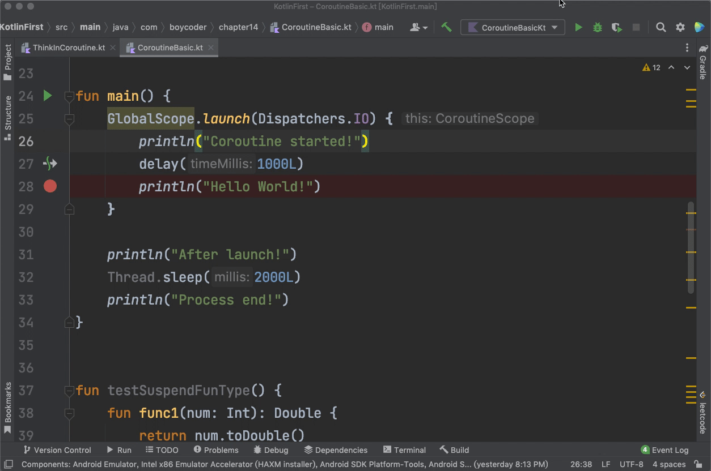
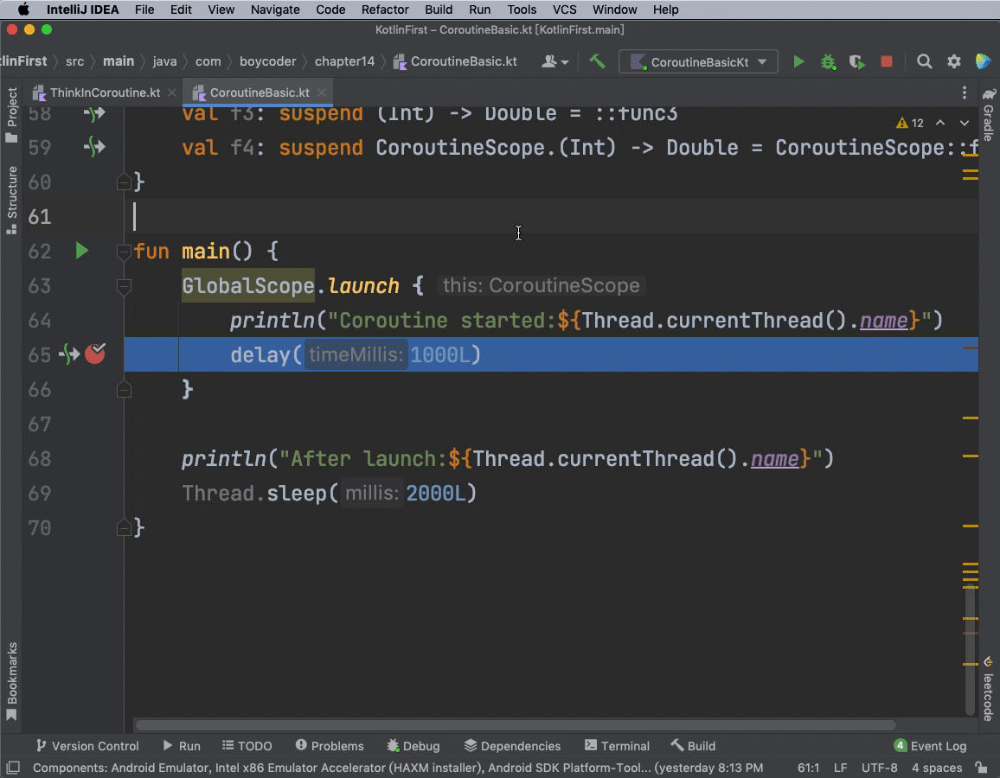
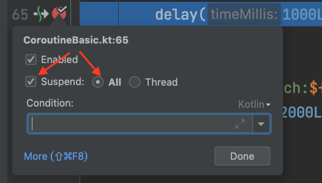
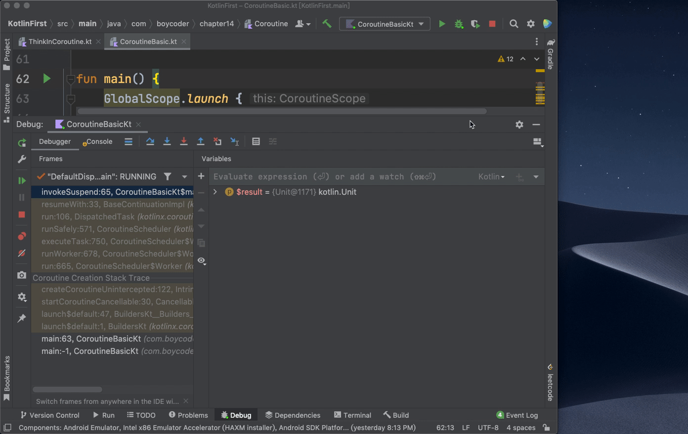
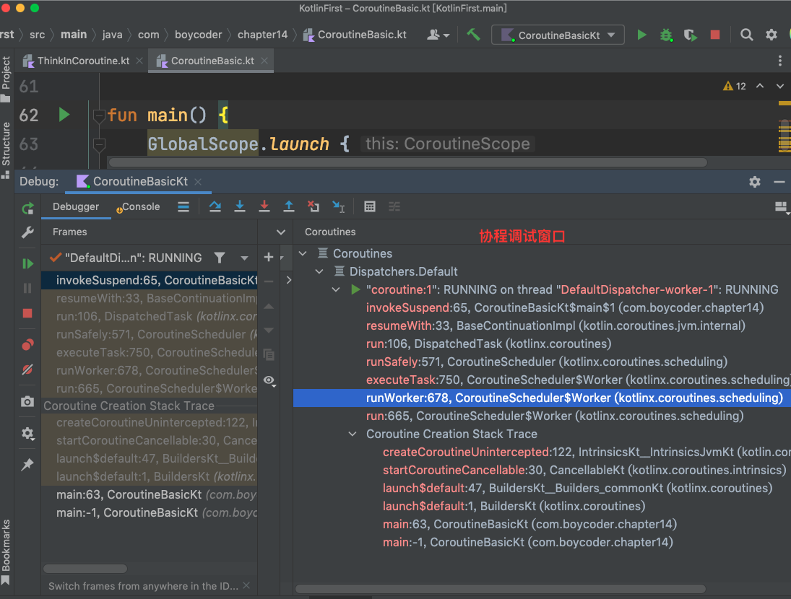
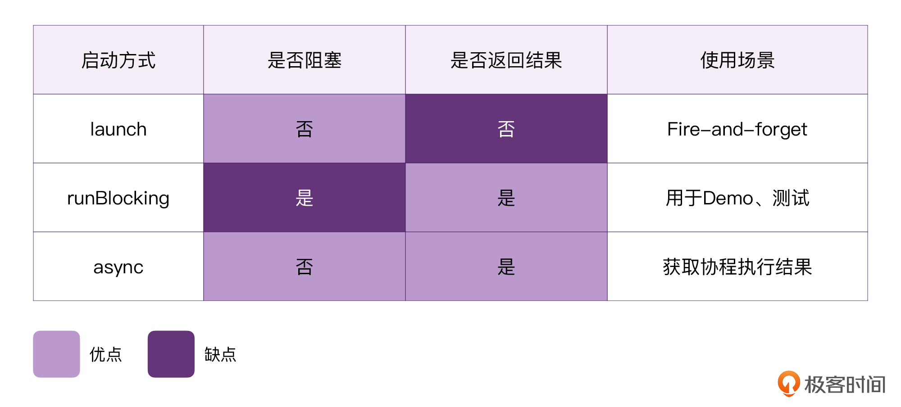

Audio如何启动协程？
你好，我是朱涛。
从今天开始，咱们正式进入协程 API 的学习，一起来攻克 Kotlin 当中最关键的部分。这节课呢，我会给你介绍下如何启动协程，主要包括协程的调试技巧、启动协程的三种方式。这些都是学习协程最基本的概念，也是后续学习更多高阶概念的基础。
注意，在这节课当中，我会使用协程 API 编写大量的案例。我也希望你能够打开 IDE，跟着我一起来运行对应的代码。通过这样的方式，你一定会有更多的收获。
好，接下来，让我们直接开始学习吧！
协程调试
想要学好 Kotlin 协程，掌握它的调试技巧很重要。一般来说，我们可以通过两种手段来进行调试：设置 VM 参数、断点调试。
协程 VM 参数
我们先来看第一种。具体的做法呢，其实很简单，我们只需要将 VM 参数设置成“-Dkotlinx.coroutines.debug”。

完成这个设置后，当我们在 log 当中打印“Thread.currentThread().name”的时候，如果当前代码是运行在协程当中的，那么它就会带上协程的相关信息。具体我们可以看个代码的例子：
// 不必关心代码逻辑，关心输出结果即可
fun main() {
GlobalScope.launch(Dispatchers.IO) {
println("Coroutine started:${Thread.currentThread().name}")
delay(1000L)
println("Hello World!")
}
println("After launch:${Thread.currentThread().name}")
Thread.sleep(2000L)
}
/*
输出结果：
After launch:main
Coroutine started:DefaultDispatcher-worker-1 @coroutine#1
*/可以看到，当代码处于协程当中的时候，“Thread.currentThread().name”是会带上协程相关的信息的，这里的“@coroutine#1”就代表了 launch 创建的协程。
断点调试协程
除了设置 VM 参数之外，我们还可以直接使用 IDE 的调试功能，直接以打断点的形式来调试协程。具体来说，主要有这样几个注意事项。
第一步，将 IntelliJ 升级到最新版本，目前我使用的版本是 2021.3.2 版本。
第二步，确保 IDE 自带的 Kotlin 编译器插件版本号大于 1.4，目前我使用的是 1.6.10。具体做法你可以参考下面的动图：

第三步，为协程代码打断点，并且右击断点处，勾选 suspend、All，这代表了我们的断点将会对协程生效。具体可以参考我下面的截图：

第四步，直接进行调试，当程序停留到断点处以后，我们就需要确保协程调试窗口已经被开启了。具体可以参考这个动图：

让我们来单独看看最后出现的那个协程调试窗口：

在这个专属的协程调试窗口当中，我们可以看到很多有用的协程信息，包括：
当前协程的名字，这里是“coroutine#1”；
当前协程运行在哪个线程之上，这里是“DefaultDispatcher-worker-1”；
当前协程的运行状态，这里是“RUNNING”；
当前协程的“创建调用栈”。
通过调试，我们可以真真切切地看到，我们用 launch 创建了一个协程，“coroutine#1”，这个协程是运行在“DefaultDispatcher-worker-1”这个线程之上的。而通过这样调试的手段，我们也进一步验证了上节课提到的协程思维模型。
接下来，我们就一起来学习启动协程的三种方式。
launch 启动协程
上节课我们讲到协程思维模型的时候，其实是把协程想象成了更加轻量的线程。线程的启动方式我们都知道，也就是 new Thread()、或者是 thread{}。那么，如何才能启动一个真正的协程呢？如果你之前看过一些协程的教程，一定见过类似这样的代码：
/* delay 函数的定义
注意这个关键字
↓ */
public suspend fun delay(timeMillis: Long) { ... }
// 仅用于研究，生产环境不建议使用GlobalScope
fun main() {
// ①
GlobalScope.launch {
// ②
delay(1000L)
println("Hello World!")
}
// ③
Thread.sleep(2000L)
}
/*
输出结果；
Hello World!
*/这段代码的逻辑很简单，核心代码只有三行，我已经用注释标记了，我们一个个看。
注释①，GlobalScope.launch{}，它是一个高阶函数，它的作用就是启动一个协程。GlobalScope 是 Kotlin 官方为我们提供的“协程作用域”，这涉及到协程的“结构化并发”理念，我们会在后面的第 16、17 讲里解释。
注释②，delay()，它的作用就是字面上的意思，“延迟”。以上代码中，我们是延迟了 1 秒。从 delay() 的函数签名这里可以发现，它的定义跟普通的函数不太一样，它多了一个“suspend”关键字，这代表了它是一个挂起函数。而这也就意味着，delay 将会拥有“挂起和恢复”的能力。
在上节课我们提到过，delay() 是非阻塞，那现在我们应该就终于明白了，既然它拥有“挂起和恢复”的能力，那么它肯定能实现非阻塞（如果你无法理解这句话，一定要回过头去看上节课的思维模型）。关于挂起函数的更多知识点，我们会在下节课介绍。
注释③，它的作用是让当前线程休眠 2 秒钟。
我们暂时先将注意力放在注释③这行代码上，很多协程的初学者都会很好奇，为什么上面的代码当中需要一个 Thread.sleep(2000L) 呢？它的作用是什么？
现在我们把它删掉，看看到底会发生什么。
fun main() {
GlobalScope.launch {
delay(1000L)
println("Hello World!")
}
}
/*
输出结果；
无
*/很奇怪，当我们删掉线程休眠的代码以后，协程代码就无法正常工作了。这是为什么？为了弄清楚这个问题，其实，我们可以做一个类比，暂时先将协程代码改成线程代码。
fun main() {
// 守护线程
// ↓
thread(isDaemon = true) {
Thread.sleep(1000L)
println("Hello World!")
}
}
/*
输出结果；
无
*/可以看到，当我们将代码改为线程以后，程序仍然没有输出任何结果。而这里，我们创建的 Thread 其实是一个“守护线程”。守护线程，就意味着当主线程结束的时候，它也会跟着被销毁。所以这样，相信你应该就能明白了，我们前面用 GlobalScope 创建的协程之所以不会正常运行，也是因为类似的原因。
那么，为了让问题能够更明确地暴露出来，我们可以为之前的代码增加一些日志。
fun main() {
GlobalScope.launch {
println("Coroutine started!")
delay(1000L)
println("Hello World!")
}
println("Process end!")
}
/*
输出结果；
Process end!
*/根据输出结果，我们可以推测出：通过 launch 创建的协程还没来得及开始执行，整个程序就已经结束了。相应的，我们也就能推测出，之前案例中 Thread.sleep(2000) 的作用了，其实，它就是为了不让我们的主线程退出。
这里，你还会发现一个协程代码特殊的行为模式，那就是：它的代码不是按照顺序执行的。为了让这一点更加明显，我们再增加一些日志：
fun main() {
GlobalScope.launch { // 1
println("Coroutine started!") // 2
delay(1000L) // 3
println("Hello World!") // 4
}
println("After launch!") // 5
Thread.sleep(2000L) // 6
println("Process end!") // 7
}
/*
输出结果：
After launch!
Coroutine started!
Hello World!
Process end!
*/根据这个程序运行结果，我们发现，以上的协程代码运行顺序是 1、5、6、2、3、4、7。也就是说，launch 并不会阻塞线程的执行，甚至，我们可以认为 launch() 当中 Lambda 一定就是在函数调用之后才执行的。当然，在特殊情况下，这种行为模式也是可以打破的，这一点我们会在第 17 讲中详细探讨。
那么，如果你足够细心，你会发现，我们通过 launch 启动一个协程以后，并没有让协程为我们返回一个执行结果，这其实就是典型的 Fire-and-forget 的应用场景。打个比方，launch 一个协程任务，就像猎人射箭一样。
launch 和射箭，有几个共同点：
箭一旦射出去了，目标就无法再被改变；协程一旦被 launch，那么它当中执行的任务也不会被中途改变。
箭如果命中了猎物，猎物也不会自动送到我们手上来；launch 的协程任务一旦完成了，即使有了结果，也没办法直接返回给调用方。
那么，launch 为什么无法将结果返回给调用方呢？如果你去看 launch 函数的源代码，你就会发现，这个函数的返回值是一个 Job，它其实代表的是协程的句柄（Handle），它并不能为我们返回协程的执行结果。
public fun CoroutineScope.launch(
context: CoroutineContext = EmptyCoroutineContext,
start: CoroutineStart = CoroutineStart.DEFAULT,
block: suspend CoroutineScope.() -> Unit
): Job { ... }不过，从 launch 的函数签名这里，我们还是可以得到很多有用的信息的，我们一个个看。
首先是 CoroutineScope.launch()，代表了 launch 其实是一个扩展函数，而它的“扩展接收者类型”是 CoroutineScope。这就意味着，我们的 launch() 会等价于 CoroutineScope 的成员方法。而如果我们要调用 launch() 来启动协程，就必须要先拿到 CoroutineScope 的对象。前面的案例，我们使用的 GlobalScope，其实就是 Kotlin 官方为我们提供的一个 CoroutineScope 对象，方便我们开发者直接启动协程。
接着是第一个参数：CoroutineContext，它代表了我们协程的上下文，它的默认值是 EmptyCoroutineContext，如果我们不传这个参数，默认就会使用 EmptyCoroutineContext。一般来说，我们也可以传入 Kotlin 官方为我们提供的 Dispatchers，来指定协程运行的线程池。协程上下文，是协程当中非常关键的元素，具体细节我会在 17 节课的时候再探讨。
然后是第二个参数：CoroutineStart，它代表了协程的启动模式。如果我们不传这个参数，它会默认使用 CoroutineStart.DEFAULT。CoroutineStart 其实是一个枚举类，一共有：DEFAULT、LAZY、ATOMIC、UNDISPATCHED。我们最常使用的就是 DEFAULT、LAZY，它们分别代表：立即执行、懒加载执行。
最后一个参数，是一个函数类型的 block，它的类型是“suspend CoroutineScope.() -> Unit”。这个类型看起来有点复杂，不过不要担心，我们可以一步步来推理，让我们先以“(Int) -> Double”这个函数类型开始：
fun func1(num: Int): Double {
return num.toDouble()
}
val f1: (Int) -> Double = ::func1上面的代码很好理解，“(Int) -> Double”代表了参数类型是 Int，返回值类型是 Double 的函数，::func1 这里，我们使用了函数引用的语法。接下来，我们再来看看“CoroutineScope.(Int) -> Double”意味着什么：
fun CoroutineScope.func2(num: Int): Double {
return num.toDouble()
}
val f2: CoroutineScope.(Int) -> Double = CoroutineScope::func2很明显，当我们在函数类型前面增加了一个接收者类型后，它的含义就变成了：这个函数应该是 CoroutineScope 类的成员方法或是扩展方法，并且，它的参数类型必须是 Int，返回值类型必须是 Double。
那么，“suspend (Int) -> Double”这个类型代表了什么呢？我们来看个例子：
suspend fun func3(num: Int): Double {
delay(100L)
return num.toDouble()
}
val f3: suspend (Int) -> Double = ::func3有了前面的基础，相信你很容易就能理解了，“suspend (Int) -> Double”，其实就代表了一个“挂起函数”，同时它的参数类型是 Int，返回值类型是 Double。
到这里，我们还可以再做一次推理，请看下面的代码：
suspend fun CoroutineScope.func4(num: Int): Double {
delay(100L)
return num.toDouble()
}
val f4: suspend CoroutineScope.(Int) -> Double = CoroutineScope::func4这时候，对于“suspend CoroutineScope.(Int) -> Double”这个函数类型，你应该也能轻松解释了。首先，它应该是一个“挂起函数”，同时，它还应该是 CoroutineScope 类的成员方法或是扩展方法，并且，它的参数类型必须是 Int，返回值类型必须是 Double。
那么现在，我们回过头再来看看 launch() 函数的第三个参数“suspend CoroutineScope.() -> Unit”，其实就能轻松分析出它的类型了。所以，当我们遇到复杂的函数类型的时候，一定不能害怕，只要我们一步步来拆解、推理，就一定能分析清楚了。
到这里，我们就弄清楚 launch 的作用了。我们通过调用 launch() 可以创建一个新的协程。那么，除了 launch 以外，还有其他办法启动协程吗？有的，那就是 runBlocking。
runBlocking 启动协程
runBlocking 跟我们前面学的 launch 的行为模式不太一样，通过它的名字，我们就可以看出来，它是存在某种阻塞行为的。让我们将前面 launch 的代码直接改为 runBlocking，看看运行结果是否有差异。
fun main() {
runBlocking { // 1
println("Coroutine started!") // 2
delay(1000L) // 3
println("Hello World!") // 4
}
println("After launch!") // 5
Thread.sleep(2000L) // 6
println("Process end!") // 7
}
/*
输出结果：
Coroutine started!
Hello World!
After launch!
Process end!
*/通过分析上面的运行结果，我们可以发现，使用 runBlocking 启动的协程会阻塞当前线程的执行，这样一来，所有的代码就变成了顺序执行：1、2、3、4、5、6、7。这其实就是 runBlocking 与 launch 的最大差异。
为了验证这一点，我们可以将上面的例子再改造一下：
fun main() {
runBlocking {
println("First:${Thread.currentThread().name}")
delay(1000L)
println("Hello First!")
}
runBlocking {
println("Second:${Thread.currentThread().name}")
delay(1000L)
println("Hello Second!")
}
runBlocking {
println("Third:${Thread.currentThread().name}")
delay(1000L)
println("Hello Third!")
}
// 删掉了 Thread.sleep
println("Process end!")
}
/*
输出结果：
First:main @coroutine#1
Hello First!
Second:main @coroutine#2
Hello Second!
Third:main @coroutine#3
Hello Third!
Process end!
*/请注意这里的输出结果，我们调用三次 runBlocking，对应地，程序就启动了三个协程。另外还有一点：以上代码中，我们删掉了末尾的“Thread.sleep(2000L)”，而程序仍然按照顺序执行了。这就进一步说明，runBlocking 确实会阻塞当前线程的执行。对于这一点，Kotlin 官方也强调了：runBlocking 只推荐用于连接线程与协程，并且，大部分情况下，都只应该用于编写 Demo 或是测试代码。
所以，请不要在生产环境当中使用 runBlocking。
另外，相信你也注意到了，当我们调用 runBlocking 的时候，并不需要 GlobalScope，这也是它跟 launch 之间的一大差异，具体，让我们来看看 runBlocking 的函数签名：
public actual fun <T> runBlocking(
context: CoroutineContext,
block: suspend CoroutineScope.() -> T): T {
...
}可以看到，runBlocking 就是一个普通的顶层函数，它并不是 CoroutineScope 的扩展函数，因此，我们调用它的时候，不需要 CoroutineScope 的对象。前面我们提到过，GlobalScope 是不建议使用的，因此，后面的案例我们将不再使用 GlobalScope。
另外，你可以注意到它的第二个参数“suspend CoroutineScope.() -> T”，这个函数类型是有返回值类型 T 的，而它刚好跟 runBlocking 的返回值类型是一样的。因此，我们可以推测，runBlocking 其实是可以从协程当中返回执行结果的。让我们来试试：
fun main() {
val result = runBlocking {
delay(1000L)
// return@runBlocking 可写可不写
return@runBlocking "Coroutine done!"
}
println("Result is: $result")
}
/*
输出结果：
Result is: Coroutine done!
*/所以，从表面上看，runBlocking 是对 launch 的一种补充，但由于它是阻塞式的，因此，runBlocking 并不适用于实际的工作当中。那么，还有什么办法可以让我们拿到协程当中的执行结果吗？
答案就是：async。
async 启动协程
async，是在很多其他编程语言都存在的一种协程模式，比如 C#。在 Kotlin 当中，我们可以使用 async{} 创建协程，并且还能通过它返回的句柄拿到协程的执行结果。让我们看个简单的例子：
fun main() = runBlocking {
println("In runBlocking:${Thread.currentThread().name}")
val deferred: Deferred<String> = async {
println("In async:${Thread.currentThread().name}")
delay(1000L) // 模拟耗时操作
return@async "Task completed!"
}
println("After async:${Thread.currentThread().name}")
val result = deferred.await()
println("Result is: $result")
}
/*
输出结果：
In runBlocking:main @coroutine#1
After async:main @coroutine#1 // 注意，它比“In async”先输出
In async:main @coroutine#2
Result is: Task completed!
*/上面的代码中，我们直接使用 runBlocking 来实现了 main 函数。注意，由于 runBlocking 的最后一个参数的类型是“suspend CoroutineScope.() -> T”，因此在 Lambda 当中已经有了 CoroutineScope，所以我们可以直接在 runBlocking 当中，用 async 启动一个协程。从程序的输出结果，我们也可以看到，确实存在两个协程，runBlocking 启动的叫做“coroutine#1”；async 启动的叫做“coroutine#2”。
另外，你应该还注意到了一个细节，那就是 async 启动协程以后，它也不会阻塞当前程序的执行流程，因为：“After async”在“In async”的前面就已经输出了。
这种行为模式在特殊情况下也是可以打破的，我们在第 17 讲的时候会介绍。
还有，请注意 async{}的返回值，它是一个 Deferred 对象，我们通过调用它的 await() 方法，就可以拿到协程的执行结果。对比前面 launch 我们举的“射箭”的例子，这里的 async，就更加像是“钓鱼”：
在我们钓鱼的时候，我们手里的鱼竿，就有点像是 async 当中的 Deferred 对象。只要我们手里有这根鱼竿，一旦有鱼儿上钩了，我们就可以直接拿到结果。
这里，我们再来看看 async 的函数签名，顺便对比一下它跟 launch 之间的差异：
public fun CoroutineScope.launch(
context: CoroutineContext = EmptyCoroutineContext,
start: CoroutineStart = CoroutineStart.DEFAULT,
block: suspend CoroutineScope.() -> Unit // 不同点1
): Job {} // 不同点2
public fun <T> CoroutineScope.async(
context: CoroutineContext = EmptyCoroutineContext,
start: CoroutineStart = CoroutineStart.DEFAULT,
block: suspend CoroutineScope.() -> T // 不同点1
): Deferred<T> {} // 不同点2从上面的代码中，我们可以发现 launch 和 async 的两个不同点，一个是 block 的函数类型，前者的返回值类型是 Unit，后者则是泛型 T；另外一个不同点在返回值上，前者返回值类型是 Job，后者返回值类型是 Deferred。而 async 可以返回协程执行结果的原因也在于此。关于 Job 与 Deferred 的更多细节，我们会在第 16 讲讨论。
这里，我制作了一张动图，来演示程序整体的执行流程：

小结
由于协程是一个非常抽象的概念，因此，它的调试手段就显得尤为重要，我们研究协程的时候，通常有两种手段，一种是设置 VM 参数：-Dkotlinx.coroutines.debug。另一种是直接在 IDE 当中打断点，不过协程调试是在 Kotlin 1.4 之后才支持的新特性，因此我们要确保 IDE 和 Kotlin 的版本都更新到最新。
另外，我们还学到了三种启动协程的方式，分别是 launch、runBlocking、async。
launch，是典型的“Fire-and-forget”场景，它不会阻塞当前程序的执行流程，使用这种方式的时候，我们无法直接获取协程的执行结果。它有点像是生活中的射箭。
runBlocking，我们可以获取协程的执行结果，但这种方式会阻塞代码的执行流程，因为它一般用于测试用途，生产环境当中是不推荐使用的。
async，则是很多编程语言当中普遍存在的协程模式。它像是结合了 launch 和 runBlocking 两者的优点。它既不会阻塞当前的执行流程，还可以直接获取协程的执行结果。它有点像是生活中的钓鱼。

思考题
下面这段代码是我在当面试官时，问过其他候选人的，你能推测出这段代码的执行结果吗？
fun main() = runBlocking {
val deferred: Deferred<String> = async {
println("In async:${Thread.currentThread().name}")
delay(1000L) // 模拟耗时操作
println("In async after delay!")
return@async "Task completed!"
}
// 不再调用 deferred.await()
delay(2000L)
}
COMMUNITY NOTES
读者评论
这篇文章暂时没有读者留言。